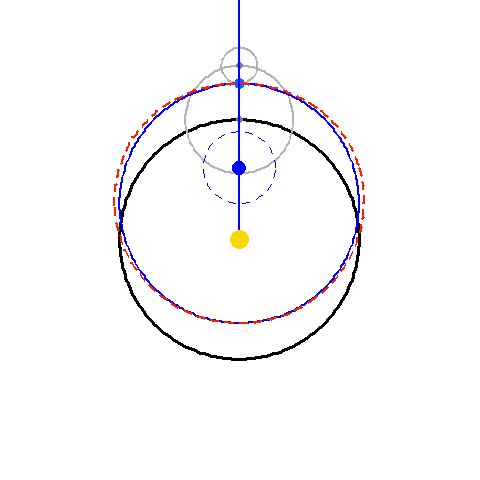

Chapter 4: Copernicus and Ptolemy
"...Further, while he strives to outdo Ptolemy in the uniformity of motions, he is in turn outdone by him in the perfection of the planetary path. For, in Ptolemy the planet bodily traces out a perfect circle in the aethereal air. Copernicus, on the other hand, says in Book V ch. 4 that for him the path of a planet is not circular, but goes outside the circular path at the sides. This is easily demostrated in the present diagram." (p. 136)
Copernicus's double-epicycle, his replacement for Ptolemy's equant.
The red dashed line is the path taken by the planet.
Copernicus was of the view that the equant had to be rejected in astronomy, because it introduced non-uniform circular motion. Click here to read more about Copernicus's thoughts on the matter. To avoid the equant, Copernicus had to use two epicycles, each moving uniformly, but with the smaller one moving at a double rate. This makes a very close match, although not a completely exact one.
Here, there are two planets moving about. The red one is created by the Copernican double-epicycle technique, while the blue one is created by the Ptolemaic equant. The blue equant point has a dashed circle around it to make it easier to see that it is indeed rotating uniformly, tracing out equal angles in equal times. Here, the eccentricity is 0.3:

An extended view of the same:
For a pedagogy on equants, Click here to see the aside on the vicarious hypothesis pedagogy.
BUT, when the eccentricity is smaller, with values corresponding to the planets of Kepler's farm, the two match almost perfectly (which is why Copernicus introduced it!). Here are the same two animations, but with eccentricity 0.1 instead. Can you see any difference?
(Click here for a .pdf you can zoom in on.)
In two experiments, Kepler finds the difference between these two models, to be 1'33" and 1'55", "a very small difference indeed." He writes: "Thus you see that, as far as the eccentric equation is concerned, there is a very slight difference preventing the two forms of hypothesis from being equivalent. (p.138)" This error is small enough to be within the bounds of observational error, being hardly observable, and conseqently does not prevent our considering the hypotheses equivalent.
Postscript:
This paragraph deserves an image:
Besides, should Copernicus retain the liberty of setting up the ratios of the epicycles, it can happen that the planet's path would come out twisted, higher before and after apogee than at apogee istelf, and lower before and after perigee than at perigee itself. (p.137)

Here, the second epicycle is almost as large as the first, resulting in the planet being "higher before and after apogee than at apogee itself."
Equivalence? How big is a minute?
Imagine a .7mm pencil lead, held eight feet away from you. That's a minute. Try taping a pencil to a wall and walking eight feet away. What device could you use from where you are standing to measure such a tiny angular distance?
It is also a width of about a quarter of a mm at the distance of a meter, or a hundreth of an inch at a distance of a yard.